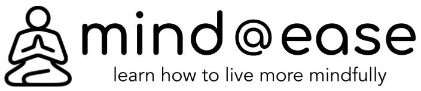

Meditation is a practice in which an individual uses a set of techniques
to develop control over their attention and awareness, by focusing on
elements of the present moment. Meditating, in a sense, is like taking a
moment to step out of the everlasting mental race that goes on in your
head. It's about taking time to observe and learn from thought patterns
rather than be reactive to them. Through this process, you directly and
indirectly gain new perspectives about your thinking habits, which will
make you more mindful of them.
With this boosted mindfulness, you are
better equipped to respond more efficiently to various situations you
encounter in your daily life. For instance, perhaps after meditating for
some time and developing mindfulness, you might realize that you don't
even enjoy your morning coffee and that it makes you anxious and
jittery, so you stop drinking coffee and save a few dollars every day
(based on a true story!).
Guided meditations are a great way to dip your toes in the water and get
a feel for what meditation is like. Typically, these meditations consist
of a voice recording in which the listener is guided into present-moment
awareness, then instructed to bring their attention to a particular
"object", which is commonly their own breath. Intermittently, the
recording prompts the listener to redirect their attention back to the
object of focus if their mind has wandered. These recordings are often
accompanied with a calming soundtrack. There are countless guided
meditations available online, many of them completely free. Guided
meditations also come in various themes, which is great for targeting
specific problems that you may be experiencing (e.g., grief,
relationship stress, injuries). Two fantastic apps that have a wide
selection of guided meditation programs are Headspace and Calm.
This style of meditation is basic, yet deeply rewarding. As you might guess by the name of it, in this practice, the meditator brings their attention to their breathing. More specifically, focus is placed on the sensations produced by breathing, for example, at the opening of the dominant nostril. So why should you use this technique? Firstly, as this practice is self-guided, you will not be interrupted by a guided voice recording, allowing you to sink deeper into a concentrated state. Secondly, the breath is a staple object to train your attention with; it is always present and it provides enough stimulation for you to keep your mind busy. Below, I have outlined eight simple steps you can take to begin a breathing-focused meditation session.
Know this: your attention will wander, over and over and over again. Be diligent and patient. Gently redirect your attention to the object of focus each time you notice your mind wandering and soon your mind will learn to do this on its own. To keep the mind engaged with the breathing sensations at the nose, try to silently note both of the following:
To learn more about breathing-focused meditation and many other meditation practices, I highly recommend the book "The Mind Illuminated" by John Yates. This book breaks down meditation into ten distinct stages, from beginner level to advanced, and explains in detail how to excel in your practice and get the most benefits. Click here to view its Amazon page, in which you can find a free sample, 1000+ reviews, and purchase options including e-book, paperback, and audiobook.